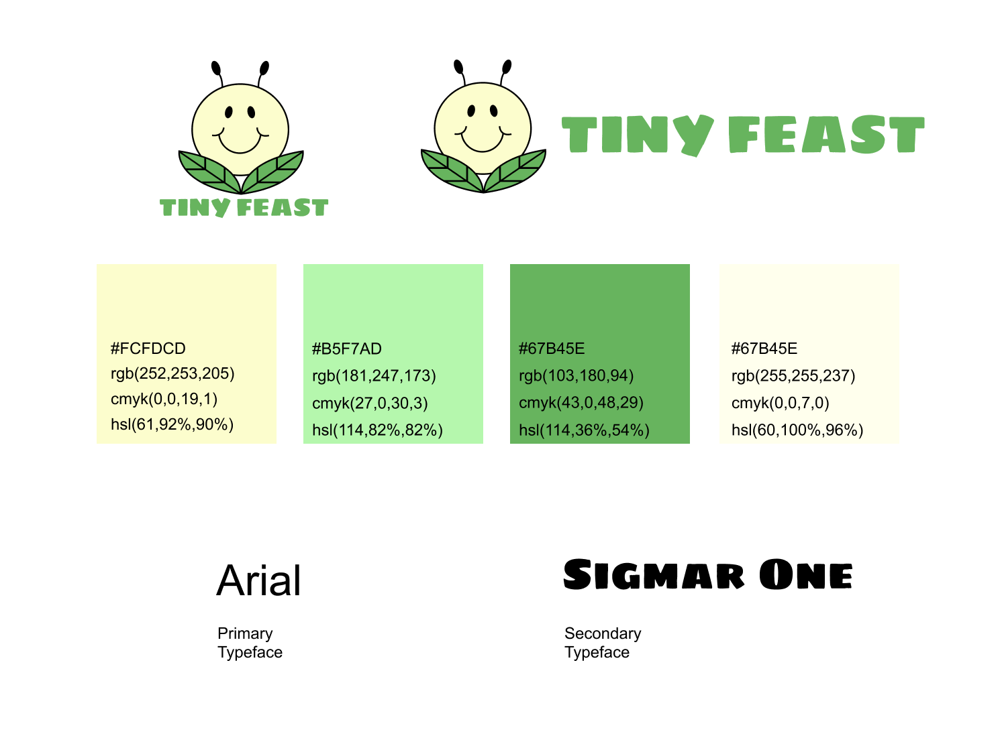
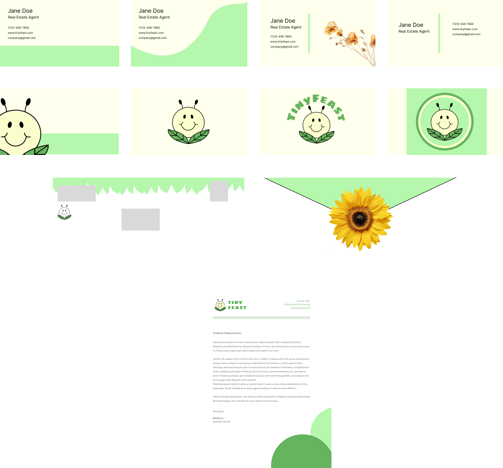
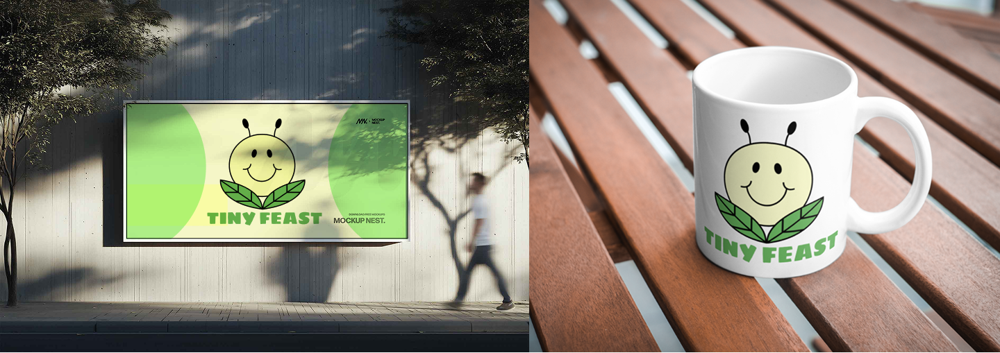
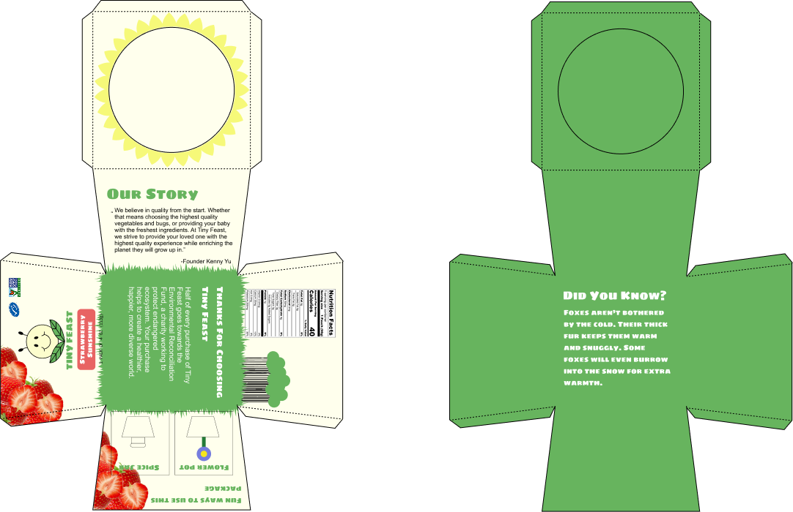

Tiny Feast is a quarter-long project completed for the visual communication course at UC Davis. The goal of the project is to create a hypothetical insect-based product and the marketing and branding to go along with.

The project started with the idea of insect-based baby food and soon, some preliminary research uncovered the wants and turn-offs of my target audience. After some ideation, I landed on colors that felt both inviting and evoked nature and developed my logo and mascot. Tiny Feast is a brand targeted towards parents looking for a sustainable nutritional meal for their babies. The branding decisions prioritized communicating the natural eco-friendly aspect of the brand with secondary focus being put on communicating the “for babies” part. The logo features a anthropomorphized worm, a primary ingredient, with bold contrasting colors. It is given a chubby smile to remain recognizable as a baby product. The colors and font likewise, reflect the dual messages of appealing baby product, and environmental healthy product.
The business systems used elegance and simplicity to draw attention to the focus on sustainability of the brand. Pressed flowers and curved shapes were prevalent motifs.


For the physical packaging, I drew inspiration from yogurt and baby food packaging. I wanted to add an extra element of delight so I included an extra fun fact on the inside of the packaging viewable after removing the item. The oyster pail shape made it more compact and material efficient.

This assignment was my first chance to work on a comprehensive brand design. I learned how to use tools such as Figma to produce graphics and organize frames. Additionally, I learned about the process of iteration, specifically its application in creating logo elements and how to design and physically build a 3-D prototype.